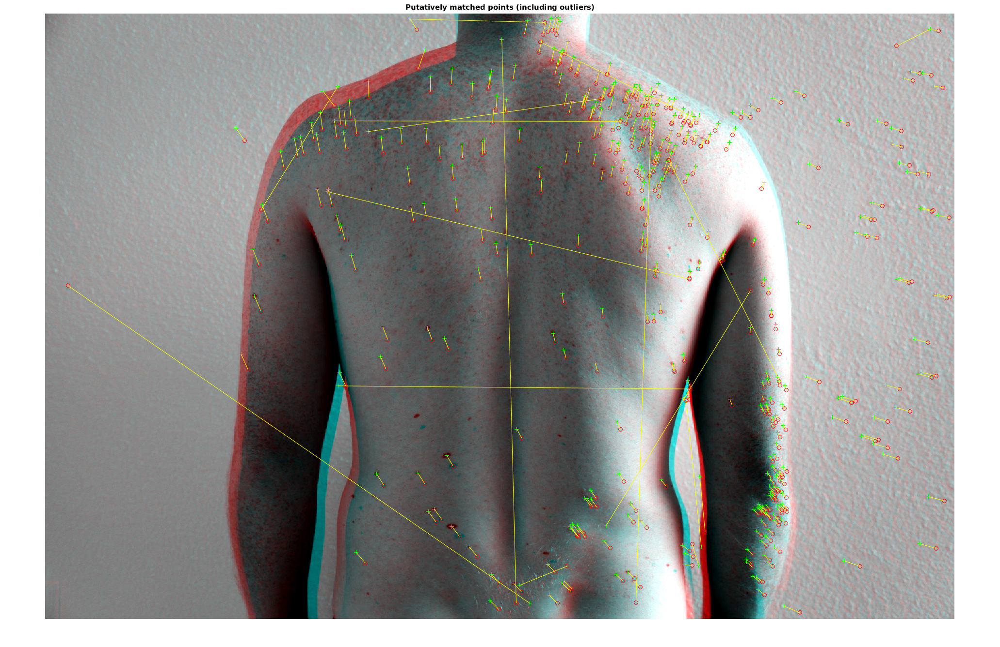

Contents
clear all
clc
close all
Image Registration - SIFT Feature Matching
Image Selection
imgs_sameShoot = {
'/media/esteva/ExtraDrive1/ThrunResearch/NikonD3Data/tmp_acne-induction/DSC_7770.JPG'
'/media/esteva/ExtraDrive1/ThrunResearch/NikonD3Data/tmp_acne-induction/DSC_7771.JPG'
};
imgs_crossShoot_27March_4_8pm = {
'/media/esteva/ExtraDrive1/ThrunResearch/NikonD3Data/3-27-2015/4pm/DSC_7771.JPG'
'/media/esteva/ExtraDrive1/ThrunResearch/NikonD3Data/3-27-2015/8pm/DSC_7775.JPG'
};
imgs_crossShoot_27March_8pm_28March = {
'/media/esteva/ExtraDrive1/ThrunResearch/NikonD3Data/3-27-2015/8pm/DSC_7776.JPG'
'/media/esteva/ExtraDrive1/ThrunResearch/NikonD3Data/3-28-2015/9am/DSC_7780.JPG'
};
imgs_cropped = {
'/media/esteva/ExtraDrive1/ThrunResearch/NikonD3Data/tmp_acne-induction/DSC_7776_cropped.JPG'
'/media/esteva/ExtraDrive1/ThrunResearch/NikonD3Data/tmp_acne-induction/DSC_7780_cropped.jpg'
};
imgs_robbro = {
'/media/esteva/ExtraDrive1/ThrunResearch/MedicalData/tracking/IMG_9089.JPG'
'/media/esteva/ExtraDrive1/ThrunResearch/MedicalData/tracking/IMG_9092.JPG'
};
imgs = imgs_robbro;
im1 = rgb2gray(imread(imgs{1}));
im2 = rgb2gray(imread(imgs{2}));
Image Preproccesing
im1 = double(im1);
im2 = double(im2);
im1 = (im1 - min(im1(:))) / max(im1(:));
im2 = (im2 - min(im2(:))) / max(im2(:));
im1 = imadjust(im1);
im2 = imadjust(im2);
level = graythresh(im1);
bw = im2bw(im1,level);
bw = bwareaopen(bw, 50);
imshow(bw)
Warning: Image is too big to fit on screen; displaying at 33%
Show Each Image Separately
figure;
imshowpair(im1, im2, 'montage')
Warning: Image is too big to fit on screen; displaying at 17%
Show OVerlaid image pair
figure;
imshowpair(im1, im2)
title('unregistered')
Warning: Image is too big to fit on screen; displaying at 33%
Registration
args = {};
ptsim1 = detectSURFFeatures(im1, args{:});
ptsim2 = detectSURFFeatures(im2, args{:});
[featuresim1, validPtsim1] = extractFeatures(im1, ptsim1);
[featuresim2, validPtsim2] = extractFeatures(im2, ptsim2);
indexPairs = matchFeatures(featuresim1, featuresim2);
matchedim1 = validPtsim1(indexPairs(:,1));
matchedim2 = validPtsim2(indexPairs(:,2));
figure;
showMatchedFeatures(im1,im2,matchedim1,matchedim2);
title('Putatively matched points (including outliers)');
Warning: Image is too big to fit on screen; displaying at 33%
